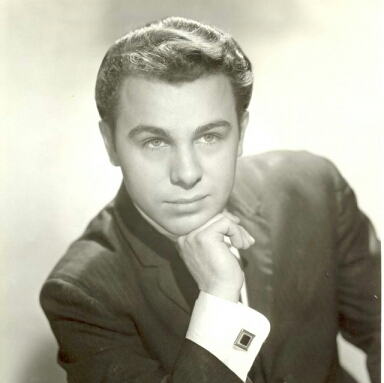
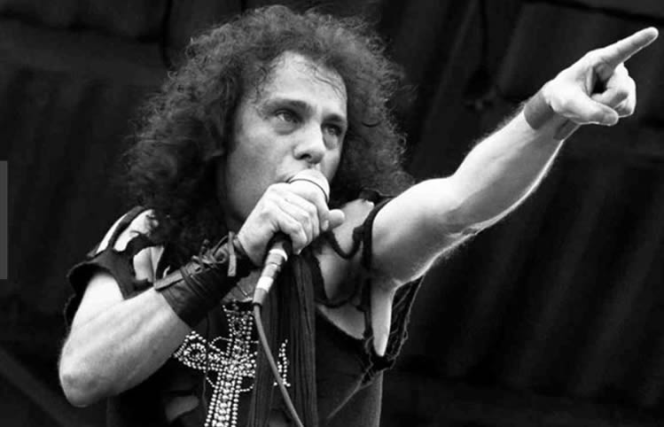

Ронні Джеймс Діо, Діо, справжнє ім'я — Роннальд Джеймс Падавона, (10 липня 1942 — 16 травня 2010) — американський рок-музикант, вокаліст, автор пісень. Зробив значний внесок у розвиток рок-музики, зокрема хеві-металу. Найбільш відомий як фронтмен гуртів Rainbow, Black Sabbath і лідер власного проекту Dio.
Народився 10 липня 1942 року у Портсмуті, штат Нью-Гемпшир, єдиною дитиною у родині італійських емігрантів, Пета (Петсі) і Анни Падавона (англ. Pat & Anna Padavona), що переїхали до США. Виріс Ронні в Кортленді, штат Нью-Йорк, де працював його батько. Сім'я Падавона була віруючою, і Ронні ріс під впливом католицької релігії, але переконаним католиком так і не став.
В дитинстві головними захопленнями Ронні були книги, спорт і музика. Він любив читати романи Вальтера Скотта, легенди про короля Артура і наукову фантастику. Хлопчик мріяв стати бейсболістом, і одного разу попросив батька купити йому биту. Але батько хотів, щоб Ронні отримав музичну освіту і приніс додому трубу. Наступного дня після цього розпочались щоденні уроки Ронні, які тривали по чотири години. Завдяки цим урокам в Діо збільшився об'єм легенів і виробилася звичка правильно дихати, що пізніше позитивно відобразилось на вокальних даних. Через деякий час хлопчик покинув гру на трубі. Після багатьох років він пояснив своє рішення наступним чином: «Труба - доволі простий інструмент, тому мені було не цікаво на ній грати. А ще я також був одним із багатьох трубачів. Не хотілось бути гвинтиком в механізмі. На щастя я відкрив для себе рок-н-ролл».
Вперше Ронні заспівав у віці семи років, під час виступу у школі. За його словами він майже знепритомнів від хвилювання. З примусу батька хлопчик виконував головну партію в церковному хорі.
Ронні завжди любив класичну музику, а Верді - його найулюбленіший композитор. «Ріголетто» і італійського майстра, а також «Кільце Нібелунгів» Ріхарда Вагнера, Діо називає в числі найулюбленіших.
Ронні Джеймс Діо володів видатними вокальними даними, його голос багато критиків називали оперним. Сам музикант в одному з інтерв'ю казав, що в дитинстві в нього вдома було багато оперних записів, які він пробував виконувати, і потім це стало «більш-менш тим стилем, у якому він співає». Також Діо говорив, що народився з таким голосом, і пізніше трохи розвинув його, граючи на трубі: «Отже, я все зводжу до купи: досвід прослуховування опер, гра на трубі і адаптація техніки цієї гри до співу - все це причини, через які зараз я можу робити те, чим я займаюся».
Музикант був гордий тим, що розвинув свій голос сам, без впливу вчителів. За його словами, він знав, що було необхідно бути природним і для того, щоб навчитися співати, він просто співав. Також Ронні розповідав про те, як він співає: «Тут важлива техніка. Потрібно співати не гортанню, а діафрагмою. Через вокальні зв'язки повинне проходити повітря, і якщо ви робите це неправильно, і не даєте їм достатньо повітря, то можете самі собі нашкодити».
